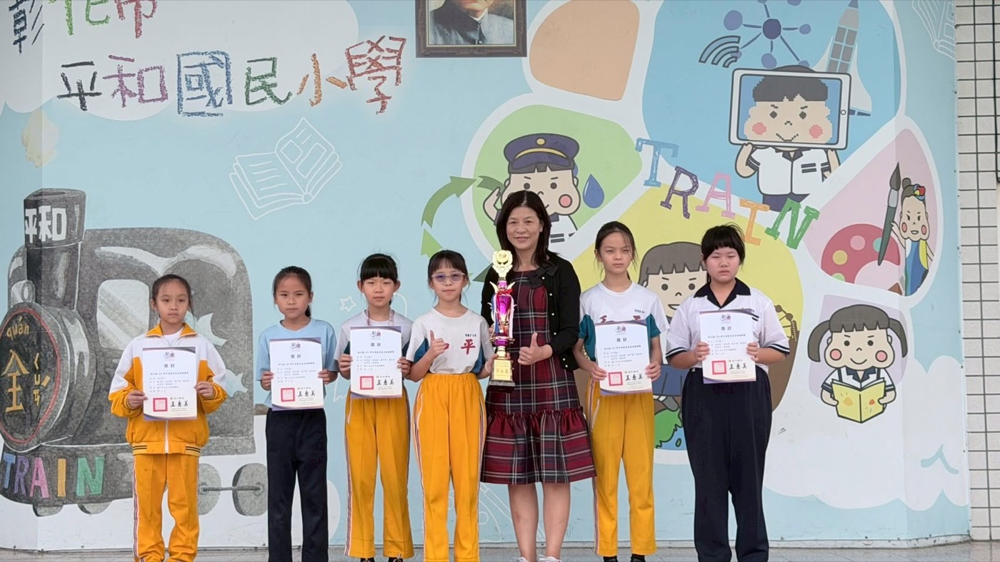
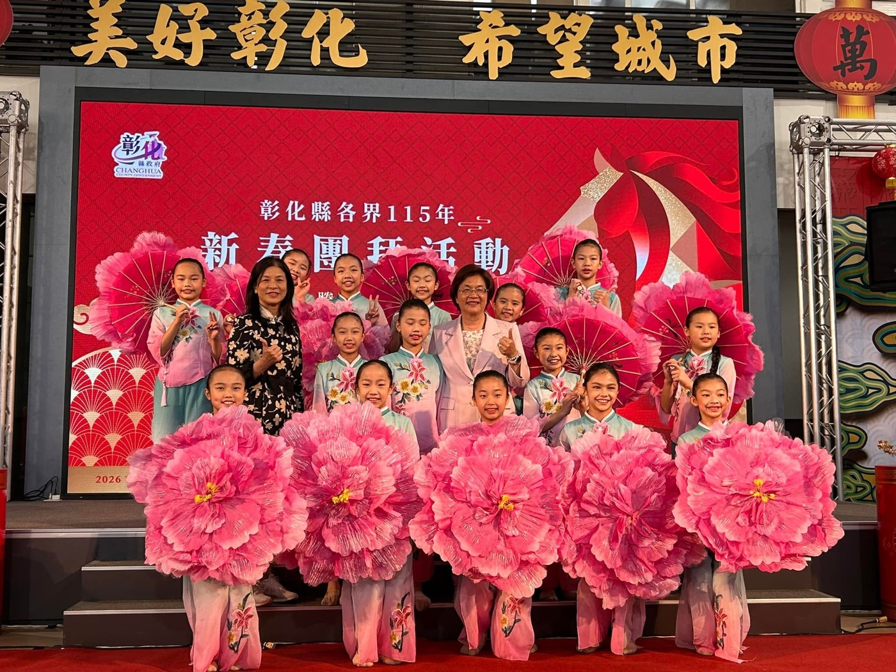
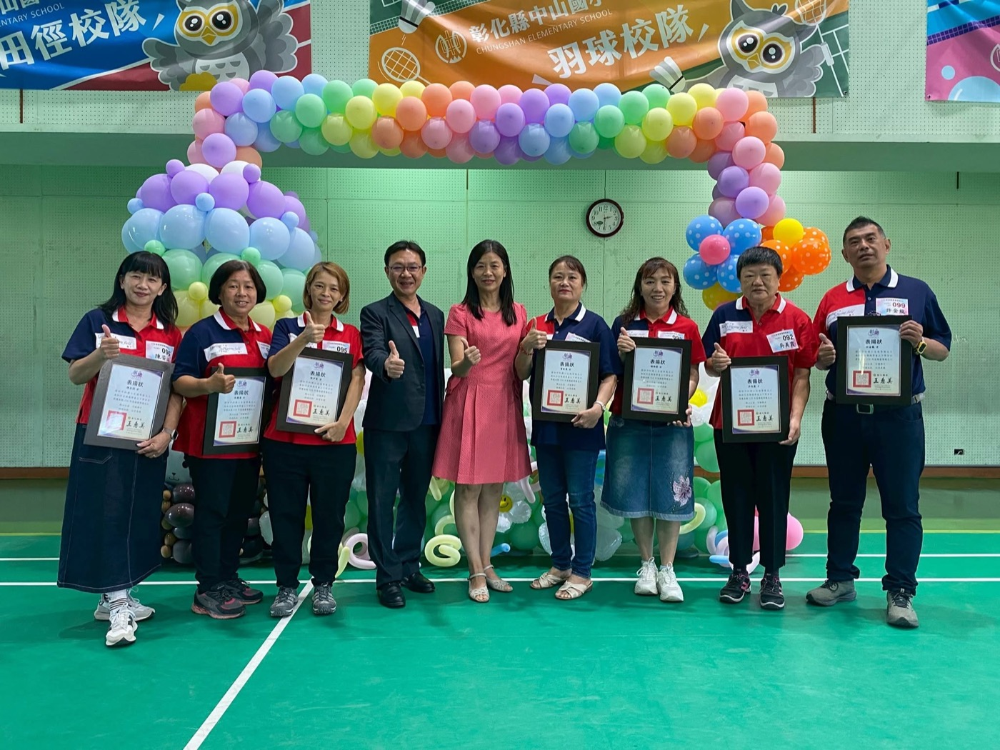

Principal Wang Li-hui leads Pinghe Elementary School with a clear focus on whole-child learning. At Pinghe, academics, arts, sports, character education, and bilingual exposure are not separate tracks. They work together to help children discover confidence in real school life.
王麗惠校長帶領平和國小推動全人學習。在平和，課業、藝術、體育、品格與雙語接觸不是分開的路線，而是在真實校園生活中一起發生，幫助孩子找到自信。
The school's TRAIN framework gives that work a shared language: Technology, Reading, Art, International understanding, and Native / Nature learning. Through short English videos, campus activities, performances, athletics, and community learning, students practice seeing their own school as a place worth describing to the world.
平和的 TRAIN 五力讓這些努力有共同語言：科技創新、閱讀自主、藝術美學、全球國際、在地公民。透過英文短影片、校園活動、展演、運動與社區學習，孩子練習把自己的學校介紹給世界。
This page will grow as more official materials are collected from the school. For now, it honors the direction already visible across the campus: steady practice, warm support, and the belief that every child can shine in more than one way.
本頁會隨後續校方資料補充而更新。目前先呈現校園中已經清楚可見的方向：穩定練習、溫暖支持，以及相信每個孩子都能用不同方式發光。
Cheering on students, at competitions, and out in the community.
為學生加油、站上競賽舞台，也走進社區活動。


